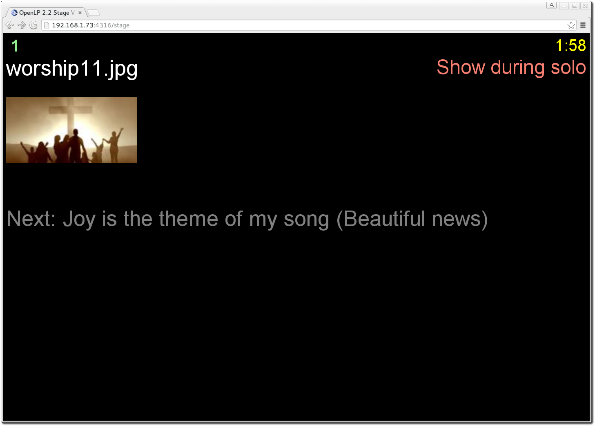
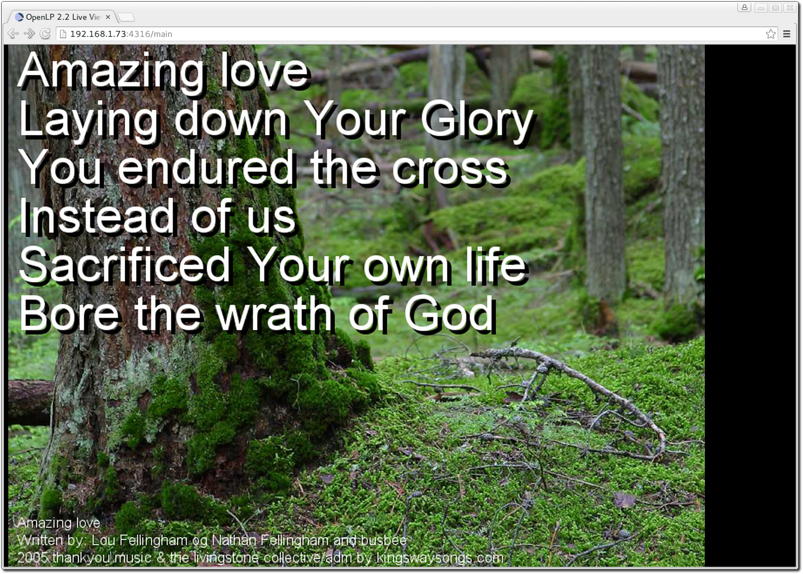

The Stage View
Stage view gives you the ability to set up a remote computer, netbook or smartphone to view the live service being displayed on the projection screen in an easy to read font on a black background. This is a text only viewer, tough it will show thumbnails of images and presentations.
The first step is to make sure the Remote plugin is activated. You can accomplish this by following the instructions in the Plugin List. The second step is to configure the settings you will use with the web browser. You can find these instructions and settings in Remote.
Open a web browser, type in the Stage View URL you found in Remote
and press the Enter key. For this example we will use
http://192.168.1.73:4316/stage. You will then be presented with the home page
of the OpenLP Stage View. On most browsers you can press F11 to go into
fullscreen mode.
At the top right hand side you will see the time of day. This can be changed from 12 hour to 24 hour format in Remote. If you added a note to the the song it will be the next line below the time. See Adding a Service Note for adding notes. Below the note will be the Bible or song verse numbers and one of those will be highlighted. The lyrics or verses highlighted below the verse numbers correspond to the highlighted verse number. In this example V1 is highlighted and the corresponding first verse below it is highlighted.
If there is an image, presentation or media being displayed you will see the title of the displayed item. Below the title will show the next item to be displayed in the Service Manager.
Custom Stage Views
It is possible to create custom stage view with custom styles, javescript and
html. To create a custom stage view, go to the OpenLP Data Folder by going to
. Inside the data folder create a
folder names stages. Inside the stages folder you can now create
a folder which will be the name of your custom view, an example could be
myview. Now copy stage.html, stage.css and
stages.js from inside OpenLPs program folder
openlp/plugins/remote/html/, and customize them to your needs. Remember
to modify stage.html to the other files from the custom stage view
folder, for instance stages/myview/stage.css for a custom
stage.css.
To access the custom stage view in a browser go to http://myopenlpip:4316/stage/myview.
The Live View
Live view gives you the ability to set up remote computers that will mirror what your projector is showing. The Live view basically works by taking screenshots of what the projector is showing and then presenting it in a browser. This means that audio and video playback will not be presented in the Live View.
The first step is to make sure the Remote plugin is activated. You can accomplish this by following the instructions in the Plugin List. The second step is to configure the settings you will use with the web browser. You can find these instructions and settings in Remote.
Open a web browser, type in the Main View URL you found in Remote
and press the Enter key. For this example we will use
http://192.168.1.73:4316/main. You will then be presented with the home page
of the OpenLP Live View. On most web browsers you can press F11 to go into
fullscreen mode.